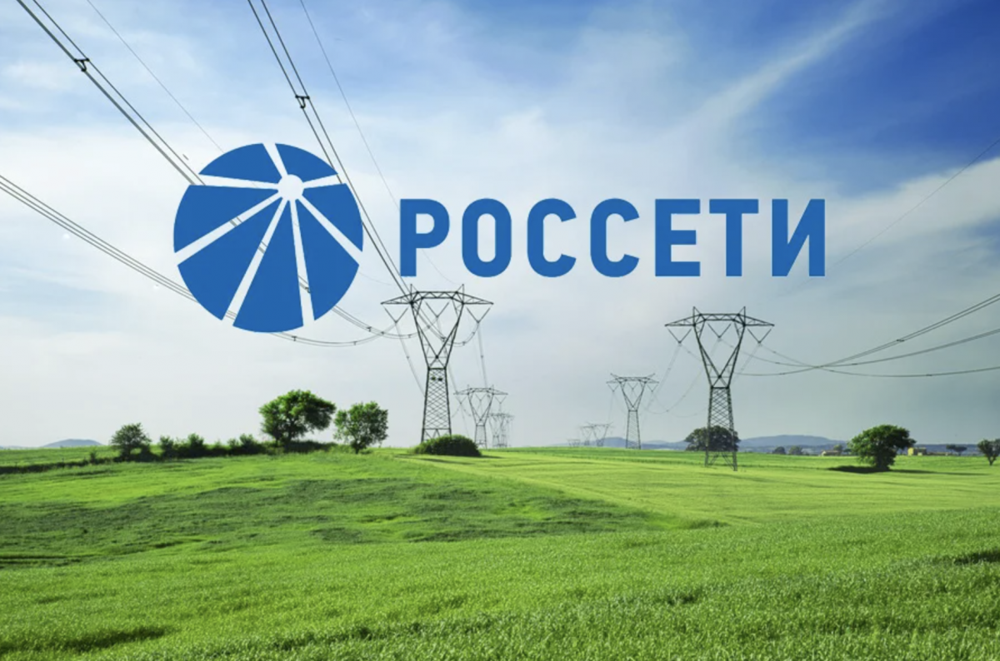

|
|
|---|

|
Информация для потребителей
Россети Центр осуществляет дистанционное обслуживание потребителей и напоминает, что все вопросы, связанные с электроснабжением, потребители могут решить в удаленном формате при помощи онлайн-сервисов.
Подать заявку на оказание услуг в электронном виде можно через личный кабинет на официальном сайте компании mrsk-1.ru и портал «ТП.РФ» портал-тп.рф, а также в мобильном приложении Россети.

Узнать о причинах отсутствия электроэнергии и планируемых сроках восстановления электроснабжения можно на сайте компании mrsk-1.ru в разделах «Информация об отключении» (сообщить об отключениях) и «Спецпроекты», (баннер «Передача сообщений об отключениях электроэнергии) или через чат-бот в левом нижнем углу на главной странице сайта компании mrsk-1.ru.
Для круглосуточной связи с потребителями работает прямая линия «Россети Центр» — единый многоканальный телефон 8 800 220-0-220 (звонок бесплатный), короткий номер 13-50 (со стационарных телефонов).
Россети Центр рекомендует использовать онлайн сервисы, так как это поможет не только сэкономить время, но и обеспечить дополнительную безопасность здоровья жителей региона присутствия Россети Центр в период сезонного распространения вирусных заболеваний.
|
Дополнительно
|
+7 (495) 747-92-92 Телефон +7 (495) 747-92-95 Факс posta@mrsk-1.ru Электронная почта 8(800)220-0-220 – Бесплатный номер телефона по вопросам перерыров в передачи и качества электрической энергии |
|---|